有的时候需要用到数据库中的表作为ER建模的模型，提供了该功能。包括从行云数据库中导入表到建模的模型中，以及从Oracle数据库中导入表到建模的模型中。
首先以普通用户登录数据库，右键点击模式节点下的用户，如图：
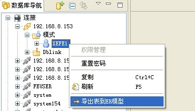
点击“导出表到ER模型”，弹出如下对话框：
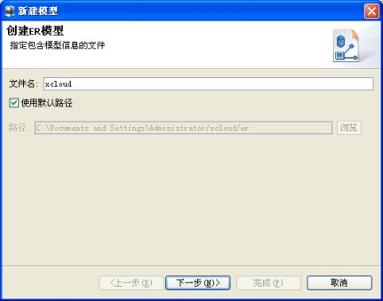
指定文件名，选择文件所在路径后，点击“下一步”按钮：
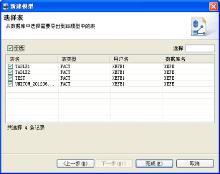
选择表后，点击“完成”按钮，这时系统新建了一个ER模型文件并打开，数据库中选择的表导到ER模型编辑器中。如图：
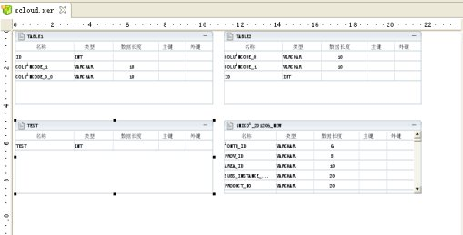
从Oracle数据库中导入表到建模的模型中之前，需要做一下Oracle数据库和行云数据库之间数据类型的映射。
在编辑器处于活动状态（处于焦点）时，点击主菜单的“Diagram”菜单项，选择“数据类型映射”，弹出如下对话框。
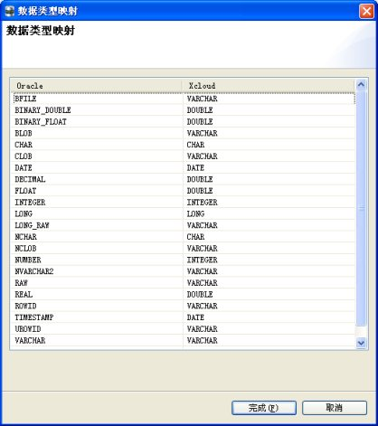
设置好Oracle数据库和行云数据库之间的数据类型映射关系后点击“确定”按钮，完成该操作。
在完成了上述的数据库数据类型映射设置后，以普通用户登录数据库，右键点击Dblink节点下的用户，如图：
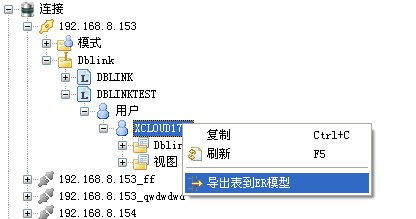
点击“导出表到ER模型”，弹出如下图向导框：
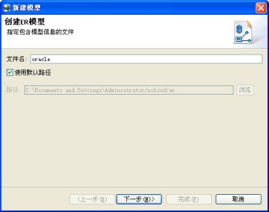
指定文件名，选择文件所在路径后，点击“下一步”按钮：
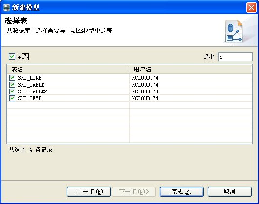
选择表后，点击“完成”按钮，这时系统新建了一个ER模型文件并打开，数据库中选择的表导到ER模型编辑器中。如图：
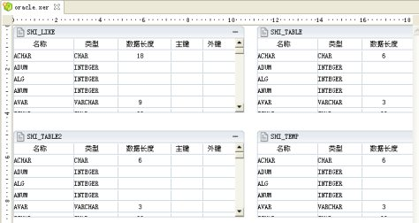
以普通用户登录数据库，可以从树节点代表的表或者视图直接拖动到ER模型编辑器中。
选中要拖拽的表或者视图：
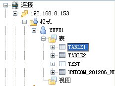
按住左键不松手拖拽至ER编辑器后松手，ER编辑器会自动创建出该表对应的ER模型，如图：
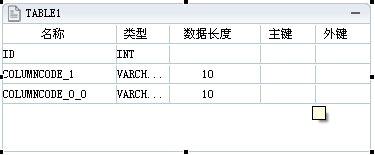
拖拽Oracle的表或者视图时，先设置Oracle和行云之间的数据类型映射，参照数据库数据类型映射。